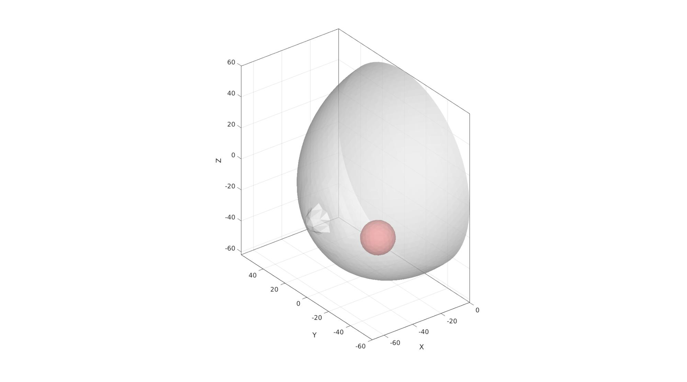
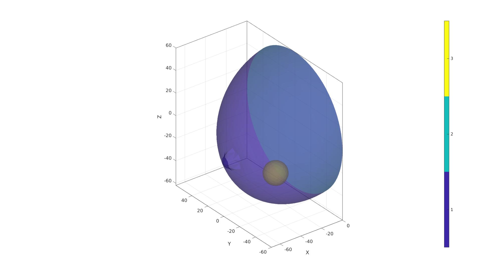
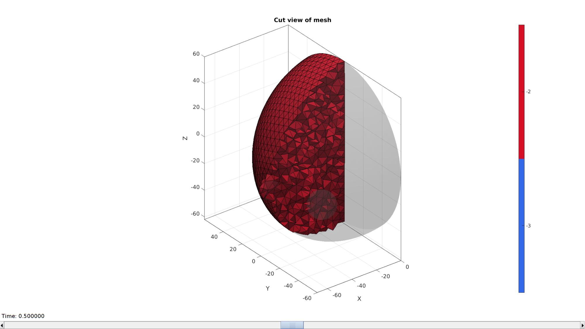
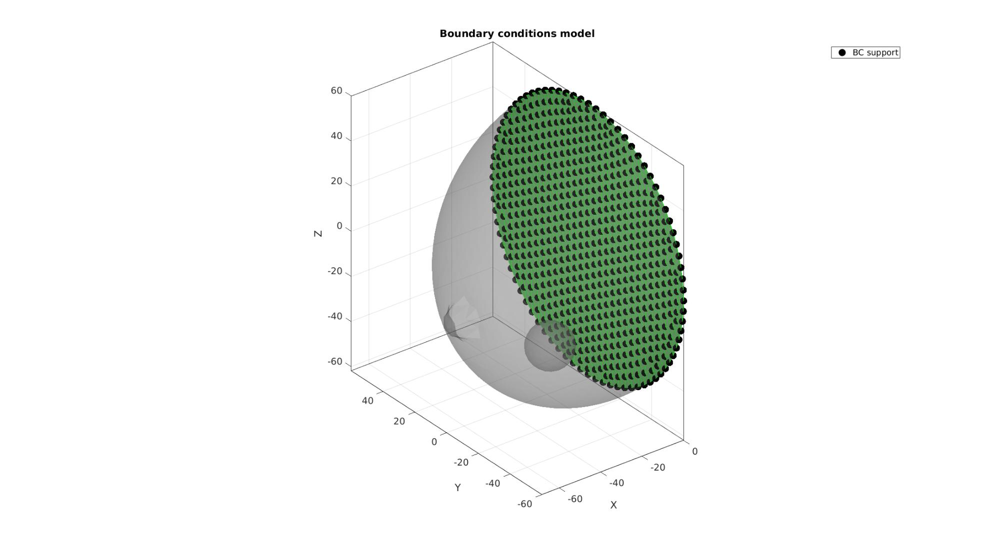

DEMO_febio_0061_breast_gravity.m
Below is a demonstration for:
- Building geometry for a slab with hexahedral elements, and a triangulated sphere.
- Defining the boundary conditions
- Coding the febio structure
- Running the model
- Importing and visualizing the displacement results
Contents
- Keywords
- Plot settings
- Control parameters
- Create hemi-sphere
- Change shape of hemi-sphere to create basic breast model
- Create inclusion
- Rotate model
- Visualizing mesh using meshView, see also anim8
- Split element sets
- Define boundary conditions
- Defining the FEBio input structure
- Quick viewing of the FEBio input file structure
- Exporting the FEBio input file
- Running the FEBio analysis
- Import FEBio results
Keywords
- febio_spec version 4.0
- febio, FEBio
- indentation
- contact, sliding, sticky, friction
- rigid body constraints
- tetrahedral elements, tet4
- triangular elements, tri3
- slab, block, rectangular
- sphere
- static, solid
- hyperelastic, Ogden
- displacement logfile
- stress logfile
clear; close all; clc;
Plot settings
fontSize=15; faceAlpha1=0.8; faceAlpha2=0.3; markerSize=40; lineWidth=3;
r=60; %Breast radius r1=r/2.5; r2=r/7; rm=mean([r1 r2]); w=(r1-r2)/20; h=r2; dx=r/4; %Gravity direction shape alteration factor nRefine=3; %Number of refine steps for hemi-sphere volumeFactor=3;
Control parameters
% Path names defaultFolder = fileparts(fileparts(mfilename('fullpath'))); savePath=fullfile(defaultFolder,'data','temp'); % Defining file names febioFebFileNamePart='tempModel'; febioFebFileName=fullfile(savePath,[febioFebFileNamePart,'.feb']); %FEB file name febioLogFileName=fullfile(savePath,[febioFebFileNamePart,'.txt']); %FEBio log file name febioLogFileName_disp=[febioFebFileNamePart,'_disp_out.txt']; %Log file name for exporting displacement febioLogFileName_force=[febioFebFileNamePart,'_force_out.txt']; %Log file name for exporting force febioLogFileName_strainEnergy=[febioFebFileNamePart,'_energy_out.txt']; %Log file name for exporting strain energy density %Material parameter set c1_1=0.2*1e-3; %Shear-modulus-like parameter m1_1=2; %Material parameter setting degree of non-linearity k_factor=1e2; %Bulk modulus factor k_1=c1_1*k_factor; %Bulk modulus c1_2=c1_1; %Shear-modulus-like parameter m1_2=2; %Material parameter setting degree of non-linearity k_factor=1e2; %Bulk modulus factor k_2=c1_2*k_factor; %Bulk modulus % FEA control settings numTimeSteps=10; %Number of time steps desired max_refs=25; %Max reforms max_ups=0; %Set to zero to use full-Newton iterations opt_iter=10; %Optimum number of iterations max_retries=5; %Maximum number of retires dtmin=(1/numTimeSteps)/100; %Minimum time step size dtmax=1/numTimeSteps; %Maximum time step size symmetric_stiffness=1; min_residual=1e-20; runMode='external'; tissueDensity=1e-9; %ton/mm^3 gravityConstant=9.81.*1e-3; %mm/s^2
Create hemi-sphere
[F,V,C_hemiSphereLabel]=hemiSphereMesh(nRefine,r,1); %Construct hemi-shere mesh pointSpacing=mean(patchEdgeLengths(F,V)); % Get point spacing from mesh
Change shape of hemi-sphere to create basic breast model
indExclude=unique(F(C_hemiSphereLabel==2,:)); logicExclude=false(size(V,1),1); logicExclude(indExclude)=1; dt=sqrt(sum(V(:,[1 2]).^2,2)); logicHigh1=dt<r1 & ~logicExclude; logicHigh2=dt<r2 & ~logicExclude; C_skin=double(logicHigh1); C_skin(logicHigh2)=2; t=linspace(0,2*pi,500); x=rm*sin(t); y=rm*cos(t); vc=[x(:) y(:)]; [d]=minDist(V(C_skin==1,[1 2]),vc); dtt=d.^3; dtt=dtt-min(dtt); dtt=dtt./max(dtt); dtt=abs(dtt-1)*w; V(C_skin==1,3)=V(C_skin==1,3)+dtt; f=V(:,3); f=f-min(f(:)); f=f./max(f(:)); V(:,1)=V(:,1)+dx.*f; dtt=dt(C_skin==2).^3; dtt=dtt-min(dtt); dtt=dtt./max(dtt); dtt=abs(dtt-1)*h; V(C_skin==2,3)=V(C_skin==2,3)+dtt;
Create inclusion
[Fs,Vs]=geoSphere(2,r/6); Vs(:,3)=Vs(:,3)+r/2; Vs(:,2)=Vs(:,2)+r/4; Vs(:,1)=Vs(:,1)+r/2;
Rotate model
rotCase=2; switch rotCase case 1 %Supine R=euler2DCM([0 0 pi]); case 2 %Standing R=euler2DCM([pi -0.5*pi 0]); case 3 %Prone R=euler2DCM([pi 0 pi]); case 4 %Side-45 R=euler2DCM([0.25*pi 0 pi]); end V=V*R; Vs=Vs*R;
Visualize breast model
cFigure; hold on; gpatch(F,V,'w','none',0.5); gpatch(Fs,Vs,'rw','none',1); axisGeom; camlight headlight; gdrawnow;
[surfaceVolume]=triSurfVolume(F,V); tissueMass=tissueDensity.*surfaceVolume; tissueMass_kg=tissueMass.*1000; bodyForceMagnitude=tissueMass.*gravityConstant; gravityVector=[0 0 bodyForceMagnitude];
Get interior points
[V_in1]=getInnerPoint({F,Fs},{V,Vs});
[V_in2]=getInnerPoint(Fs,Vs);
C=[C_hemiSphereLabel;(max(C_hemiSphereLabel(:))+1)*ones(size(Fs,1),1)]; F=[F;Fs+size(V,1)]; V=[V;Vs]; cFigure; hold on; gpatch(F,V,C,'none',0.5); axisGeom; camlight headlight; colormap gjet; icolorbar; gdrawnow;
V_regions=[V_in1; V_in2]; cFigure; hold on; gpatch(F,V,C,'none',0.5); % gpatch(Fs,Vs,'kw','none',1); plotV(V_regions,'k.','markerSize',50); axisGeom; camlight headlight; gdrawnow;
faceBoundaryMarker=C; [regionA]=tetVolMeanEst(F,V); %Volume for regular tets inputStruct.stringOpt='-pq1.2AaY'; inputStruct.Faces=fliplr(F); inputStruct.Nodes=V; inputStruct.holePoints=[]; inputStruct.faceBoundaryMarker=faceBoundaryMarker; %Face boundary markers inputStruct.regionPoints=V_regions; %region points inputStruct.regionA=regionA*ones(size(V_regions,1),1)*volumeFactor; inputStruct.minRegionMarker=2; %Minimum region marker % Mesh model using tetrahedral elements using tetGen [meshOutput]=runTetGen(inputStruct); %Run tetGen % Access model element and patch data Fb=meshOutput.facesBoundary; Cb=meshOutput.boundaryMarker; V=meshOutput.nodes; CE=meshOutput.elementMaterialID; E=meshOutput.elements;
%%%%%%%%%%%%%%%%%%%%%%%%%%%%%%%%%%%%%%%%%%%%% --- TETGEN Tetrahedral meshing --- 27-Apr-2023 17:05:39 %%%%%%%%%%%%%%%%%%%%%%%%%%%%%%%%%%%%%%%%%%%%% --- Writing SMESH file --- 27-Apr-2023 17:05:39 ----> Adding node field ----> Adding facet field ----> Adding holes specification ----> Adding region specification --- Done --- 27-Apr-2023 17:05:39 --- Running TetGen to mesh input boundary--- 27-Apr-2023 17:05:39 Opening /mnt/data/MATLAB/GIBBON/data/temp/temp.smesh. Delaunizing vertices... Delaunay seconds: 0.028508 Creating surface mesh ... Surface mesh seconds: 0.003249 Recovering boundaries... Boundary recovery seconds: 0.005878 Removing exterior tetrahedra ... Spreading region attributes. Exterior tets removal seconds: 0.001539 Recovering Delaunayness... Delaunay recovery seconds: 0.008008 Refining mesh... 2728 insertions, added 2712 points, 83080 tetrahedra in queue. Refinement seconds: 0.07939 Smoothing vertices... Mesh smoothing seconds: 0.142454 Improving mesh... Mesh improvement seconds: 0.005943 Writing /mnt/data/MATLAB/GIBBON/data/temp/temp.1.node. Writing /mnt/data/MATLAB/GIBBON/data/temp/temp.1.ele. Writing /mnt/data/MATLAB/GIBBON/data/temp/temp.1.face. Writing /mnt/data/MATLAB/GIBBON/data/temp/temp.1.edge. Output seconds: 0.060998 Total running seconds: 0.336158 Statistics: Input points: 2047 Input facets: 4086 Input segments: 6129 Input holes: 0 Input regions: 2 Mesh points: 5439 Mesh tetrahedra: 27522 Mesh faces: 56927 Mesh faces on exterior boundary: 3766 Mesh faces on input facets: 4086 Mesh edges on input segments: 6129 Steiner points inside domain: 3392 --- Done --- 27-Apr-2023 17:05:39 %%%%%%%%%%%%%%%%%%%%%%%%%%%%%%%%%%%%%%%%%%%%% --- Importing TetGen files --- 27-Apr-2023 17:05:39 --- Done --- 27-Apr-2023 17:05:39
cFigure; hold on; hp=gpatch(Fb,V,Cb,'none',0.5); axisGeom; camlight headlight; icolorbar; gdrawnow;
Visualizing mesh using meshView, see also anim8
meshView(meshOutput);
Split element sets
E1=E(meshOutput.elementMaterialID==-2,:); E2=E(meshOutput.elementMaterialID==-3,:);
Define boundary conditions
%Supported nodes
logicRigid=Cb==2;
bcSupportList=unique(Fb(logicRigid,:));
E_rigid=Fb(Cb==2,:);
Visualize BC's
hf=cFigure; title('Boundary conditions model','FontSize',fontSize); xlabel('X','FontSize',fontSize); ylabel('Y','FontSize',fontSize); zlabel('Z','FontSize',fontSize); hold on; gpatch(Fb,V,'kw','none',faceAlpha2); gpatch(E_rigid,V,'gw','g',1); hl2(1)=plotV(V(bcSupportList,:),'k.','MarkerSize',markerSize); legend(hl2,{'BC support'}); axisGeom(gca,fontSize); camlight headlight; gdrawnow;
Defining the FEBio input structure
See also febioStructTemplate and febioStruct2xml and the FEBio user manual.
%Get a template with default settings [febio_spec]=febioStructTemplate; %febio_spec version febio_spec.ATTR.version='4.0'; %Module section febio_spec.Module.ATTR.type='solid'; %Control section febio_spec.Control.analysis='STATIC'; febio_spec.Control.time_steps=numTimeSteps; febio_spec.Control.step_size=1/numTimeSteps; febio_spec.Control.solver.max_refs=max_refs; febio_spec.Control.solver.qn_method.max_ups=max_ups; febio_spec.Control.solver.symmetric_stiffness=symmetric_stiffness; febio_spec.Control.time_stepper.dtmin=dtmin; febio_spec.Control.time_stepper.dtmax=dtmax; febio_spec.Control.time_stepper.max_retries=max_retries; febio_spec.Control.time_stepper.opt_iter=opt_iter; %Material section materialName1='Material1'; febio_spec.Material.material{1}.ATTR.name=materialName1; febio_spec.Material.material{1}.ATTR.type='Ogden'; febio_spec.Material.material{1}.ATTR.id=1; febio_spec.Material.material{1}.c1=c1_1; febio_spec.Material.material{1}.m1=m1_1; febio_spec.Material.material{1}.c2=c1_1; febio_spec.Material.material{1}.m2=-m1_1; febio_spec.Material.material{1}.k=k_1; materialName2='Material2'; febio_spec.Material.material{2}.ATTR.name=materialName2; febio_spec.Material.material{2}.ATTR.type='Ogden'; febio_spec.Material.material{2}.ATTR.id=2; febio_spec.Material.material{2}.c1=c1_2; febio_spec.Material.material{2}.m1=m1_2; febio_spec.Material.material{2}.c2=c1_2; febio_spec.Material.material{2}.m2=-m1_2; febio_spec.Material.material{2}.k=k_2; % Mesh section % -> Nodes febio_spec.Mesh.Nodes{1}.ATTR.name='All'; %The node set name febio_spec.Mesh.Nodes{1}.node.ATTR.id=(1:size(V,1))'; %The node id's febio_spec.Mesh.Nodes{1}.node.VAL=V; %The nodel coordinates % -> Elements partName1='Part1_breast_normal'; febio_spec.Mesh.Elements{1}.ATTR.name=partName1; %Name of this part febio_spec.Mesh.Elements{1}.ATTR.type='tet4'; %Element type febio_spec.Mesh.Elements{1}.elem.ATTR.id=(1:1:size(E1,1))'; %Element id's febio_spec.Mesh.Elements{1}.elem.VAL=E1; %The element matrix partName2='Part2_tumor'; febio_spec.Mesh.Elements{2}.ATTR.name=partName2; %Name of this part febio_spec.Mesh.Elements{2}.ATTR.type='tet4'; %Element type febio_spec.Mesh.Elements{2}.elem.ATTR.id=size(E1,1)+(1:1:size(E2,1))'; %Element id's febio_spec.Mesh.Elements{2}.elem.VAL=E2; %The element matrix %MeshDomains section febio_spec.MeshDomains.SolidDomain{1}.ATTR.name=partName1; febio_spec.MeshDomains.SolidDomain{1}.ATTR.mat=materialName1; febio_spec.MeshDomains.SolidDomain{2}.ATTR.name=partName2; febio_spec.MeshDomains.SolidDomain{2}.ATTR.mat=materialName2; % -> NodeSets nodeSetName1='bcSupportList'; febio_spec.Mesh.NodeSet{1}.ATTR.name=nodeSetName1; febio_spec.Mesh.NodeSet{1}.VAL=mrow(bcSupportList); %Boundary condition section % -> Fix boundary conditions febio_spec.Boundary.bc{1}.ATTR.name='zero_displacement_xyz'; febio_spec.Boundary.bc{1}.ATTR.type='zero displacement'; febio_spec.Boundary.bc{1}.ATTR.node_set=nodeSetName1; febio_spec.Boundary.bc{1}.x_dof=1; febio_spec.Boundary.bc{1}.y_dof=1; febio_spec.Boundary.bc{1}.z_dof=1; %Loads section % -> Body load febio_spec.Loads.body_load{1}.ATTR.type='const'; febio_spec.Loads.body_load{1}.x.ATTR.lc=1; febio_spec.Loads.body_load{1}.x.VAL=gravityVector(1); febio_spec.Loads.body_load{1}.y.ATTR.lc=1; febio_spec.Loads.body_load{1}.y.VAL=gravityVector(2); febio_spec.Loads.body_load{1}.z.ATTR.lc=1; febio_spec.Loads.body_load{1}.z.VAL=gravityVector(3); %LoadData section % -> load_controller febio_spec.LoadData.load_controller{1}.ATTR.name='LC_1'; febio_spec.LoadData.load_controller{1}.ATTR.id=1; febio_spec.LoadData.load_controller{1}.ATTR.type='loadcurve'; febio_spec.LoadData.load_controller{1}.interpolate='LINEAR'; %febio_spec.LoadData.load_controller{1}.extend='CONSTANT'; febio_spec.LoadData.load_controller{1}.points.pt.VAL=[0 0; 1 1]; %Output section % -> log file febio_spec.Output.logfile.ATTR.file=febioLogFileName; febio_spec.Output.logfile.node_data{1}.ATTR.file=febioLogFileName_disp; febio_spec.Output.logfile.node_data{1}.ATTR.data='ux;uy;uz'; febio_spec.Output.logfile.node_data{1}.ATTR.delim=','; febio_spec.Output.logfile.element_data{1}.ATTR.file=febioLogFileName_strainEnergy; febio_spec.Output.logfile.element_data{1}.ATTR.data='sed'; febio_spec.Output.logfile.element_data{1}.ATTR.delim=','; febio_spec.Output.logfile.element_data{1}.VAL=1:(size(E1,1)+size(E2,1)); % Plotfile section febio_spec.Output.plotfile.compression=0;
Quick viewing of the FEBio input file structure
The febView function can be used to view the xml structure in a MATLAB figure window.
febView(febio_spec); %Viewing the febio file
Exporting the FEBio input file
Exporting the febio_spec structure to an FEBio input file is done using the febioStruct2xml function.
febioStruct2xml(febio_spec,febioFebFileName); %Exporting to file and domNode
Running the FEBio analysis
To run the analysis defined by the created FEBio input file the runMonitorFEBio function is used. The input for this function is a structure defining job settings e.g. the FEBio input file name. The optional output runFlag informs the user if the analysis was run succesfully.
febioAnalysis.run_filename=febioFebFileName; %The input file name febioAnalysis.run_logname=febioLogFileName; %The name for the log file febioAnalysis.disp_on=1; %Display information on the command window febioAnalysis.disp_log_on=1; %Display convergence information in the command window febioAnalysis.runMode=runMode; febioAnalysis.t_check=0.25; %Time for checking log file (dont set too small) febioAnalysis.maxtpi=1e99; %Max analysis time febioAnalysis.maxLogCheckTime=10; %Max log file checking time [runFlag]=runMonitorFEBio(febioAnalysis);%START FEBio NOW!!!!!!!!
%%%%%%%%%%%%%%%%%%%%%%%%%%%%%%%%%%%%%%%%%%%%%%%%%%%%%%%%%%%%%%%%%%%%%%%%%%%
--------> RUNNING/MONITORING FEBIO JOB <-------- 27-Apr-2023 17:05:47
FEBio path: /home/kevin/FEBioStudio2/bin/febio4
# Attempt removal of existing log files 27-Apr-2023 17:05:47
* Removal succesful 27-Apr-2023 17:05:47
# Attempt removal of existing .xplt files 27-Apr-2023 17:05:47
* Removal succesful 27-Apr-2023 17:05:47
# Starting FEBio... 27-Apr-2023 17:05:47
Max. total analysis time is: 1e+99 s
* Waiting for log file creation 27-Apr-2023 17:05:47
Max. wait time: 10 s
* Log file found. 27-Apr-2023 17:05:48
# Parsing log file... 27-Apr-2023 17:05:48
number of iterations : 3 27-Apr-2023 17:05:49
number of reformations : 3 27-Apr-2023 17:05:49
------- converged at time : 0.1 27-Apr-2023 17:05:49
number of iterations : 3 27-Apr-2023 17:05:50
number of reformations : 3 27-Apr-2023 17:05:50
------- converged at time : 0.2 27-Apr-2023 17:05:50
number of iterations : 3 27-Apr-2023 17:05:51
number of reformations : 3 27-Apr-2023 17:05:51
------- converged at time : 0.3 27-Apr-2023 17:05:51
number of iterations : 3 27-Apr-2023 17:05:52
number of reformations : 3 27-Apr-2023 17:05:52
------- converged at time : 0.4 27-Apr-2023 17:05:52
number of iterations : 3 27-Apr-2023 17:05:53
number of reformations : 3 27-Apr-2023 17:05:53
number of iterations : 3 27-Apr-2023 17:05:54
number of reformations : 3 27-Apr-2023 17:05:54
number of iterations : 3 27-Apr-2023 17:05:55
------- converged at time : 0.7 27-Apr-2023 17:05:56
number of iterations : 3 27-Apr-2023 17:05:56
------- converged at time : 0.8 27-Apr-2023 17:05:56
number of iterations : 4 27-Apr-2023 17:05:58
number of reformations : 4 27-Apr-2023 17:05:58
------- converged at time : 0.9 27-Apr-2023 17:05:58
number of reformations : 4 27-Apr-2023 17:05:59
------- converged at time : 1 27-Apr-2023 17:05:59
Elapsed time : 0:00:12 27-Apr-2023 17:05:59
N O R M A L T E R M I N A T I O N
# Done 27-Apr-2023 17:05:59
%%%%%%%%%%%%%%%%%%%%%%%%%%%%%%%%%%%%%%%%%%%%%%%%%%%%%%%%%%%%%%%%%%%%%%%%%%%
Import FEBio results
if runFlag==1 %i.e. a succesful run
Importing nodal displacements from a log file
dataStruct=importFEBio_logfile(fullfile(savePath,febioLogFileName_disp),0,1);
%Access data
N_disp_mat=dataStruct.data; %Displacement
timeVec=dataStruct.time; %Time
%Create deformed coordinate set
V_DEF=N_disp_mat+repmat(V,[1 1 size(N_disp_mat,3)]);
Plotting the simulated results using anim8 to visualize and animate deformations
DN_magnitude=sqrt(sum(N_disp_mat(:,:,end).^2,2)); %Current displacement magnitude % Create basic view and store graphics handle to initiate animation hf=cFigure; %Open figure gtitle([febioFebFileNamePart,': Press play to animate']); hp1=gpatch(Fb,V_DEF(:,:,end),DN_magnitude,'none',0.5); %Add graphics object to animate hp1.FaceColor='Interp'; hp2=gpatch(Fb(Cb==3,:),V_DEF(:,:,end),'kw','none',1); %Add graphics object to animate axisGeom(gca,fontSize); colormap(gjet(250)); colorbar; caxis([0 max(DN_magnitude(:))]); axis(axisLim(V_DEF)); %Set axis limits statically camlight headlight; % Set up animation features animStruct.Time=timeVec; %The time vector for qt=1:1:size(N_disp_mat,3) %Loop over time increments DN_magnitude=sqrt(sum(N_disp_mat(:,:,qt).^2,2)); %Current displacement magnitude %Set entries in animation structure animStruct.Handles{qt}=[hp1 hp1 hp2]; %Handles of objects to animate animStruct.Props{qt}={'Vertices','CData','Vertices'}; %Properties of objects to animate animStruct.Set{qt}={V_DEF(:,:,qt),DN_magnitude,V_DEF(:,:,qt)}; %Property values for to set in order to animate end anim8(hf,animStruct); %Initiate animation feature gdrawnow;
[M,G,bwLabels]=patch2Im(Fb,V_DEF(:,:,end),Cb,1); M(M==1)=0.25; M(M==3)=1; M(M==0)=0.1; M=M+0.25*rand(size(M)); voxelSize=G.voxelSize; imOrigin=G.origin; Vp=mean(V_DEF(Fb(Cb==3,:),:,end),1)-imOrigin; [i,j,k]=cart2im(Vp(:,1),Vp(:,2),Vp(:,3),voxelSize*ones(1,3)); L_plot=false(size(M)); L_plot(round(i),:,:)=1; L_plot(:,round(j),:)=1; L_plot(:,:,round(k))=1; L_plot=L_plot & ~isnan(M); [Fm,Vm,Cm]=ind2patch(L_plot,double(M),'v'); [Vm(:,1),Vm(:,2),Vm(:,3)]=im2cart(Vm(:,2),Vm(:,1),Vm(:,3),voxelSize*ones(1,3)); Vm=Vm+imOrigin(ones(size(Vm,1),1),:);
hf=cFigure;
hp1=gpatch(Fb,V_DEF(:,:,end),'w','none',0.25); hp2=gpatch(Fm,Vm,Cm,'none',1);
colormap(gca,gray(250)); colorbar; caxis([0 1]);
axisGeom(gca,fontSize);
axis(axisLim(V_DEF)); %Set axis limits statically
camlight('headlight');
gdrawnow;% Set up animation features animStruct.Time=time_mat; %The time vector for qt=1:1:size(N_disp_mat,3) %Loop over time increments
V_def=V+N_disp_mat(:,:,qt); %Current nodal coordinates
[M,G,bwLabels]=patch2Im(Fb,V_def,Cb,1);
M(M==1)=0.25;
M(M==3)=1;
M(M==0)=0.1;
% M(isnan(M))=0;
M=M+0.1*rand(size(M)); voxelSize=G.voxelSize;
imOrigin=G.origin;
Vp=mean(V_DEF(Fb(Cb==3,:),:,qt),1)-imOrigin;
[i,j,k]=cart2im(Vp(:,1),Vp(:,2),Vp(:,3),voxelSize*ones(1,3));
L_plot=false(size(M));
L_plot(round(i),:,:)=1;
L_plot(:,round(j),:)=1;
L_plot(:,:,round(k))=1;
L_plot=L_plot & ~isnan(M);
[Fm,Vm,Cm]=ind2patch(L_plot,double(M),'v');
[Vm(:,1),Vm(:,2),Vm(:,3)]=im2cart(Vm(:,2),Vm(:,1),Vm(:,3),voxelSize*ones(1,3));
Vm=Vm+imOrigin(ones(size(Vm,1),1),:); %Set entries in animation structure
animStruct.Handles{qt}=[hp1 hp2 hp2 hp2]; %Handles of objects to animate
animStruct.Props{qt}={'Vertices','Faces','Vertices','CData'}; %Properties of objects to animate
animStruct.Set{qt}={V_DEF(:,:,qt),Fm,Vm,Cm}; %Property values for to set in order to animate
end
anim8(hf,animStruct); %Initiate animation feature
gdrawnow;end

GIBBON www.gibboncode.org
Kevin Mattheus Moerman, gibbon.toolbox@gmail.com
GIBBON footer text
License: https://github.com/gibbonCode/GIBBON/blob/master/LICENSE
GIBBON: The Geometry and Image-based Bioengineering add-On. A toolbox for image segmentation, image-based modeling, meshing, and finite element analysis.
Copyright (C) 2006-2022 Kevin Mattheus Moerman and the GIBBON contributors
This program is free software: you can redistribute it and/or modify it under the terms of the GNU General Public License as published by the Free Software Foundation, either version 3 of the License, or (at your option) any later version.
This program is distributed in the hope that it will be useful, but WITHOUT ANY WARRANTY; without even the implied warranty of MERCHANTABILITY or FITNESS FOR A PARTICULAR PURPOSE. See the GNU General Public License for more details.
You should have received a copy of the GNU General Public License along with this program. If not, see http://www.gnu.org/licenses/.